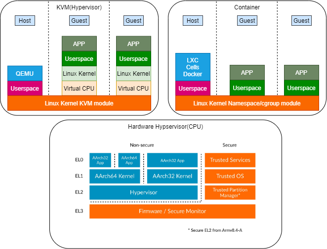

Linux Container LXC
理解容器LXC的本质
参考文档
基于容器原理(docker、lxc、cells)的Android 双系统设计概要
https://github.com/jianglin-code/cells-of-container-android
https://github.com/jianglin-code
https://github.com/beordle/cells-of-Android
https://alpinelinux.org/
Hypervisor KVM Container架构区别

snap lxc容器安装及基本使用
sudo apt install snapd bridge-utils -y
sudo snap install core lxd
export PATH=$PATH:/snap/bin
lxd -h
ERROR: ld.so: object '/usr/lib/arm-linux-gnueabihf/libarmmem-${PLATFORM}.so' from /etc/ld.so.preload cannot be preloaded (cannot open shared object file): ignored. ERROR: ld.so: object '/usr/lib/arm-linux-gnueabihf/libarmmem-${PLATFORM}.so' from /etc/ld.so.preload cannot be preloaded (cannot open shared object file): ignored. ERROR: ld.so: object '/usr/lib/arm-linux-gnueabihf/libarmmem-${PLATFORM}.so' from /etc/ld.so.preload cannot be preloaded (cannot open shared object file): ignored. ERROR: ld.so: object '/usr/lib/arm-linux-gnueabihf/libarmmem-${PLATFORM}.so' from /etc/ld.so.preload cannot be preloaded (cannot open shared object file): ignored. ERROR: ld.so: object '/usr/lib/arm-linux-gnueabihf/libarmmem-${PLATFORM}.so' from /etc/ld.so.preload cannot be preloaded (cannot open shared object file): ignored. ERROR: ld.so: object '/usr/lib/arm-linux-gnueabihf/libarmmem-${PLATFORM}.so' from /etc/ld.so.preload cannot be preloaded (cannot open shared object file): ignored. ERROR: ld.so: object '/usr/lib/arm-linux-gnueabihf/libarmmem-${PLATFORM}.so' from /etc/ld.so.preload cannot be preloaded (cannot open shared object file): ignored. ERROR: ld.so: object '/usr/lib/arm-linux-gnueabihf/libarmmem-${PLATFORM}.so' from /etc/ld.so.preload cannot be preloaded (cannot open shared object file): ignored. ...省略
sudo vim /etc/ld.so.preload
#/usr/lib/arm-linux-gnueabihf/libarmmem-${PLATFORM}.so
sudo adduser pi lxd
newgrp lxd
mkdir ~/zengjf/lxc
cd ~/zengjf/lxc
lxd init
Would you like to use LXD clustering? (yes/no) [default=no]: Do you want to configure a new storage pool? (yes/no) [default=yes]: Name of the new storage pool [default=default]: Name of the storage backend to use (btrfs, dir, lvm, ceph) [default=btrfs]: Create a new BTRFS pool? (yes/no) [default=yes]: Would you like to use an existing empty block device (e.g. a disk or partition)? (yes/no) [default=no]: Size in GB of the new loop device (1GB minimum) [default=5GB]: 2GB Would you like to connect to a MAAS server? (yes/no) [default=no]: Would you like to create a new local network bridge? (yes/no) [default=yes]: What should the new bridge be called? [default=lxdbr0]: What IPv4 address should be used? (CIDR subnet notation, “auto” or “none”) [default=auto]: What IPv6 address should be used? (CIDR subnet notation, “auto” or “none”) [default=auto]: Would you like the LXD server to be available over the network? (yes/no) [default=no]: Would you like stale cached images to be updated automatically? (yes/no) [default=yes] Would you like a YAML "lxd init" preseed to be printed? (yes/no) [default=no]:
只修改了默认的文件大小为2GB，其他的默认
lxc list
To start your first instance, try: lxc launch ubuntu:18.04 +------+-------+------+------+------+-----------+ | NAME | STATE | IPV4 | IPV6 | TYPE | SNAPSHOTS | +------+-------+------+------+------+-----------+
lxc info | more
config: {} api_extensions: - storage_zfs_remove_snapshots - container_host_shutdown_timeout - container_stop_priority - container_syscall_filtering - auth_pki - container_last_used_at - etag - patch - usb_devices ...省略 driver: lxc driver_version: 4.0.6 firewall: nftables kernel: Linux kernel_architecture: armv7l kernel_features: netnsid_getifaddrs: "true" seccomp_listener: "true" seccomp_listener_continue: "false" shiftfs: "false" uevent_injection: "true" unpriv_fscaps: "true" kernel_version: 5.4.79-v7l+ lxc_features: cgroup2: "true" devpts_fd: "true" mount_injection_file: "true" network_gateway_device_route: "true" network_ipvlan: "true" network_l2proxy: "true" network_phys_macvlan_mtu: "true" network_veth_router: "true" pidfd: "true" seccomp_allow_deny_syntax: "true" seccomp_notify: "true" seccomp_proxy_send_notify_fd: "true" os_name: Raspbian GNU/Linux os_version: "10" project: default server: lxd server_clustered: false server_name: raspberrypi server_pid: 3855 server_version: "4.10" storage: btrfs storage_version: 4.15.1
lxc image list images:
+--------------------------------------+--------------+--------+----------------------------------------------+--------------+-----------------+-----------+-------------------------------+ | ALIAS | FINGERPRINT | PUBLIC | DESCRIPTION | ARCHITECTURE | TYPE | SIZE | UPLOAD DATE | +--------------------------------------+--------------+--------+----------------------------------------------+--------------+-----------------+-----------+-------------------------------+ | alpine/3.10 (3 more) | 9d1b3ad888be | yes | Alpine 3.10 armhf (20210126_13:27) | armv7l | CONTAINER | 2.10MB | Jan 26, 2021 at 12:00am (UTC) | +--------------------------------------+--------------+--------+----------------------------------------------+--------------+-----------------+-----------+-------------------------------+ | alpine/3.10/amd64 (1 more) | 506166850f05 | yes | Alpine 3.10 amd64 (20210126_13:00) | x86_64 | CONTAINER | 2.40MB | Jan 26, 2021 at 12:00am (UTC) | +--------------------------------------+--------------+--------+----------------------------------------------+--------------+-----------------+-----------+-------------------------------+ ...省略
需要等待挺久的，会输出很多行
lxc remote add tuna-images https://mirrors.tuna.tsinghua.edu.cn/lxc-images/ –protocol=simplestreams –public
lxc image list tuna-images:
lxc init images:alpine/3.10 alpine-container
lxc list
+------------------+---------+------+------+-----------+-----------+ | NAME | STATE | IPV4 | IPV6 | TYPE | SNAPSHOTS | +------------------+---------+------+------+-----------+-----------+ | alpine-container | STOPPED | | | CONTAINER | 0 | +------------------+---------+------+------+-----------+-----------+
lxc start alpine-container
lxc stop alpine-container
lxc list
+------------------+---------+---------------------+-----------------------------------------------+-----------+-----------+ | NAME | STATE | IPV4 | IPV6 | TYPE | SNAPSHOTS | +------------------+---------+---------------------+-----------------------------------------------+-----------+-----------+ | alpine-container | RUNNING | 10.117.80.67 (eth0) | fd42:116d:f610:9948:216:3eff:fe8c:f8d2 (eth0) | CONTAINER | 0 | +------------------+---------+---------------------+-----------------------------------------------+-----------+-----------+
lxc exec alpine-container – sh
~ # pwd /root ~ # ls / bin dev etc home lib media mnt opt proc root run sbin srv sys tmp usr var ~ #
sed -i ‘s/dl-cdn.alpinelinux.org/mirrors.ustc.edu.cn/g’ /etc/apk/repositories
使用科大镜像
apk update
apk add openssh-server
adduser zengjf
Changing password for zengjf New password: Bad password: too weak Retype password: passwd: password for zengjf changed by root
rc-update add sshd
/etc/init.d/sshd restart
* Caching service dependencies ...[ ok ] ssh-keygen: generating new host keys: RSA DSA ECDSA ED25519 * Starting sshd ...
ssh zengjf@10.117.80.67
The authenticity of host '10.117.80.67 (10.117.80.67)' can't be established. ECDSA key fingerprint is SHA256:iUeSLvQI46GYUDhZGI/vBfmXdQzRYFj0KfPjACdZwBU. Are you sure you want to continue connecting (yes/no)? yes Warning: Permanently added '10.117.80.67' (ECDSA) to the list of known hosts. zengjf@10.117.80.67's password: Welcome to Alpine! The Alpine Wiki contains a large amount of how-to guides and general information about administrating Alpine systems. See <http://wiki.alpinelinux.org/>. You can setup the system with the command: setup-alpine You may change this message by editing /etc/motd. alpine-container:~$ pwd /home/zengjf alpine-container:~$ ls / bin dev etc home lib media mnt opt proc root run sbin srv sys tmp usr var alpine-container:~$
snap lxc容器位置
export PATH=$PATH:/snap/bin
lxc storage show default
config: size: 2GB source: /var/snap/lxd/common/lxd/disks/default.img description: "" name: default driver: btrfs used_by: - /1.0/images/9d1b3ad888be05fd15c940607734c702a1ddcea9849af2037c131c6f862ff3f1 - /1.0/instances/alpine-container - /1.0/profiles/default status: Created locations: - none
sudo file default.img
default.img: BTRFS Filesystem label "default", sectorsize 4096, nodesize 16384, leafsize 16384, UUID=931e56aa-c016-4a43-aa24-1209432168ba, 11096064/1999998976 bytes used, 1 devices
lxc stop alpine-container
losetup /dev/loop8 default.img
losetup -d /dev/loop8
losetup –list
NAME SIZELIMIT OFFSET AUTOCLEAR RO BACK-FILE DIO LOG-SEC /dev/loop1 0 0 1 1 /var/lib/snapd/snaps/core18_1948.snap 0 512 /dev/loop8 0 0 0 0 /var/snap/lxd/common/lxd/disks/default.img 0 512 /dev/loop2 0 0 1 1 /var/lib/snapd/snaps/core_10584.snap 0 512 /dev/loop0 0 0 1 1 /var/lib/snapd/snaps/lxd_19021.snap 0 512 /dev/loop3 0 0 1 0 /var/snap/lxd/common/lxd/disks/default.img 0 512
/dev/loop3和/dev/loop8相同，删掉/dev/loop8
losetup -d /dev/loop8
udisksctl info -b /dev/loop3
/org/freedesktop/UDisks2/block_devices/loop3: org.freedesktop.UDisks2.Block: Configuration: [] CryptoBackingDevice: '/' Device: /dev/loop3 DeviceNumber: 1795 Drive: '/' HintAuto: false HintIconName: HintIgnore: false HintName: HintPartitionable: true HintSymbolicIconName: HintSystem: true Id: IdLabel: default IdType: btrfs IdUUID: 931e56aa-c016-4a43-aa24-1209432168ba IdUsage: filesystem IdVersion: MDRaid: '/' MDRaidMember: '/' PreferredDevice: /dev/loop3 ReadOnly: false Size: 2000000000 Symlinks: /dev/disk/by-label/default /dev/disk/by-uuid/931e56aa-c016-4a43-aa24-1209432168ba UserspaceMountOptions: org.freedesktop.UDisks2.Filesystem: MountPoints: Size: 0 org.freedesktop.UDisks2.Loop: Autoclear: true BackingFile: /var/snap/lxd/common/lxd/disks/default.img SetupByUID: 0
sudo su
mkdir /zengjf
sudo mount /dev/loop3 /zengjf
udisksctl info -b /dev/loop3
/org/freedesktop/UDisks2/block_devices/loop3: org.freedesktop.UDisks2.Block: Configuration: [] CryptoBackingDevice: '/' Device: /dev/loop3 DeviceNumber: 1795 Drive: '/' HintAuto: false HintIconName: HintIgnore: false HintName: HintPartitionable: true HintSymbolicIconName: HintSystem: true Id: IdLabel: default IdType: btrfs IdUUID: 931e56aa-c016-4a43-aa24-1209432168ba IdUsage: filesystem IdVersion: MDRaid: '/' MDRaidMember: '/' PreferredDevice: /dev/loop3 ReadOnly: false Size: 2000000000 Symlinks: /dev/disk/by-label/default /dev/disk/by-uuid/931e56aa-c016-4a43-aa24-1209432168ba UserspaceMountOptions: org.freedesktop.UDisks2.Filesystem: MountPoints: /zengjf Size: 0 org.freedesktop.UDisks2.Loop: Autoclear: true BackingFile: /var/snap/lxd/common/lxd/disks/default.img SetupByUID: 0
MountPoints: /zengjf
ls -al /dev/disk/by-label/default
lrwxrwxrwx 1 root root 11 Jan 28 11:16 /dev/disk/by-label/default -> ../../loop3
ls -al /dev/disk/by-uuid/931e56aa-c016-4a43-aa24-1209432168ba
lrwxrwxrwx 1 root root 11 Jan 28 11:16 /dev/disk/by-uuid/931e56aa-c016-4a43-aa24-1209432168ba -> ../../loop3
ls /zengjf/
containers containers-snapshots custom custom-snapshots images virtual-machines virtual-machines-snapshots
cd /zengjf/containers/alpine-container/rootfs/etc/apk
ack ustc
repositories 1:http://mirrors.ustc.edu.cn/alpine/v3.10/main 2:http://mirrors.ustc.edu.cn/alpine/v3.10/community
lxc start alpine-container
snap lxc命令分析
cd /snap/bin
ls -al
total 8 drwxr-xr-x 2 root root 4096 Jan 27 17:52 . drwxr-xr-x 6 root root 4096 Jan 27 17:51 .. lrwxrwxrwx 1 root root 7 Jan 27 17:52 lxc -> lxd.lxc lrwxrwxrwx 1 root root 13 Jan 27 17:51 lxd -> /usr/bin/snap lrwxrwxrwx 1 root root 13 Jan 27 17:51 lxd.benchmark -> /usr/bin/snap lrwxrwxrwx 1 root root 13 Jan 27 17:51 lxd.buginfo -> /usr/bin/snap lrwxrwxrwx 1 root root 13 Jan 27 17:51 lxd.check-kernel -> /usr/bin/snap lrwxrwxrwx 1 root root 13 Jan 27 17:51 lxd.lxc -> /usr/bin/snap lrwxrwxrwx 1 root root 13 Jan 27 17:51 lxd.lxc-to-lxd -> /usr/bin/snap lrwxrwxrwx 1 root root 13 Jan 27 17:51 lxd.migrate -> /usr/bin/snap
snap list
Name Version Rev Tracking Publisher Notes core 16-2.48.2 10584 latest/stable canonical✓ core core18 20201210 1948 latest/stable canonical✓ base lxd 4.10 19021 latest/stable canonical✓ -
-
当我们运行lxd命令的时候，/usr/bin/snap被调用。/usr/bin/snap会先看看自己叫什么名字，名字里有没有点。以lxd为例，里面没点，因此/usr/bin/snap知道要去调用snaplxd里的lxd命令。以lxc为例，lxd.lxc里有点，因此/usr/bin/snap知道调用snap lxd里的lxc命令。无论那种情况，/usr/bin/snap都知道了snap包名。之后它就可以去读snap包里的meta/snap.yaml文件了。meta/snap.yaml里有对这个snap的描述，包括基于core¸ core18还是core20。于是/usr/bin/snap可以确定snap的基础镜像。基础镜像确定后，/usr/bin/snap准备容器的文件系统，然后继续根据meta/snap.yaml描述，应用资源使用策略，这时候AppArmor会派上用场。一切准备完毕，最终在容器里调用用户所要运行的命令。
/etc/profile.d/apps-bin-path.sh
添加PATH路径
LXC
参考文档
-
Linux容器功能是基于cgroups和Namespace来实现的。所以要了解Linux容器必须先了解cgroup和Namespace；
cgroups是将任意进程进行分组化管理的Linux内核功能。通过cgroups可以有效的隔离各类进程，同时还可以控制进程的资源占用(CPU，内存等等)情况；
使用Namespace，可以让每个进程组有独立的PID，IPC和网络空间。Namespace的生效主要是通过clone系统调用来实现的。clone系统调用的第3个参数flags就是通过设置Namespace来划分资源的；
How to Install and Configure an LXC Container on Ubuntu 16.04
-
sudo apt-get install lxc lxc-templates
lxc-checkconfig
Kernel configuration not found at /proc/config.gz; searching... lxc-checkconfig: unable to retrieve kernel configuration Try modprobe configs module, or Try recompiling with IKCONFIG_PROC, installing the kernel headers, or specifying the kernel configuration path with: CONFIG=<path> lxc-checkconfig
-
You should export kernel config to proc, i.e. rebuild your kernel with specified option CONFIG_IKCONFIG_PROC=y
-
sudo modprobe configs
lxc-checkconfig
--- Namespaces --- Namespaces: enabled Utsname namespace: enabled Ipc namespace: enabled Pid namespace: enabled User namespace: enabled Network namespace: enabled --- Control groups --- Cgroups: enabled Cgroup v1 mount points: /sys/fs/cgroup/systemd /sys/fs/cgroup/blkio /sys/fs/cgroup/devices /sys/fs/cgroup/cpuset /sys/fs/cgroup/pids /sys/fs/cgroup/freezer /sys/fs/cgroup/net_cls,net_prio /sys/fs/cgroup/cpu,cpuacct /sys/fs/cgroup/perf_event Cgroup v2 mount points: /sys/fs/cgroup/unified Cgroup v1 clone_children flag: enabled Cgroup device: enabled Cgroup sched: enabled Cgroup cpu account: enabled Cgroup memory controller: enabled Cgroup cpuset: enabled --- Misc --- Veth pair device: enabled, not loaded Macvlan: enabled, not loaded Vlan: enabled, loaded Bridges: enabled, not loaded Advanced netfilter: enabled, loaded CONFIG_NF_NAT_IPV4: missing CONFIG_NF_NAT_IPV6: missing CONFIG_IP_NF_TARGET_MASQUERADE: enabled, not loaded CONFIG_IP6_NF_TARGET_MASQUERADE: enabled, not loaded CONFIG_NETFILTER_XT_TARGET_CHECKSUM: enabled, not loaded CONFIG_NETFILTER_XT_MATCH_COMMENT: enabled, not loaded FUSE (for use with lxcfs): enabled, loaded --- Checkpoint/Restore --- checkpoint restore: missing CONFIG_FHANDLE: enabled CONFIG_EVENTFD: enabled CONFIG_EPOLL: enabled CONFIG_UNIX_DIAG: missing CONFIG_INET_DIAG: enabled CONFIG_PACKET_DIAG: missing CONFIG_NETLINK_DIAG: missing File capabilities: Note : Before booting a new kernel, you can check its configuration usage : CONFIG=/path/to/config /usr/bin/lxc-checkconfig
ls /usr/share/lxc/templates/
lxc-alpine lxc-download lxc-opensuse lxc-sshd lxc-altlinux lxc-fedora lxc-oracle lxc-ubuntu lxc-archlinux lxc-fedora-legacy lxc-plamo lxc-ubuntu-cloud lxc-busybox lxc-gentoo lxc-pld lxc-voidlinux lxc-centos lxc-local lxc-sabayon lxc-cirros lxc-oci lxc-slackware lxc-debian lxc-openmandriva lxc-sparclinux
sudo lxc-create -n zengjf -t busybox
sudo lxc-ls
zengjfsudo lxc-start -n zengjf -d
sudo lxc-info -n zengjf
Name: zengjf State: RUNNING PID: 2014 CPU use: 0.03 seconds BlkIO use: 0 bytes
ls /var/lib/lxc
zengjf关与密码
root@raspberrypi:/var/lib/lxc# cat zengjf/rootfs/etc/passwd root:x:0:0:root:/root:/bin/sh root@raspberrypi:/var/lib/lxc# cat zengjf/rootfs/etc/shadow
因为shadow中没有内容，所以去掉密码设置，修改如下，否则后面无法登录
root@raspberrypi:/var/lib/lxc# cat zengjf/rootfs/etc/passwd root::0:0:root:/root:/bin/sh
sudo lxc-console -n zengjf
Connected to tty 1 Type <Ctrl+a q> to exit the console, <Ctrl+a Ctrl+a> to enter Ctrl+a itself Login timed out after 60 seconds zengjf login: root BusyBox v1.30.1 (Raspbian 1:1.30.1-4) built-in shell (ash) Enter 'help' for a list of built-in commands. ~ # ls / bin dev home lib64 null ram0 sbin sys tty tty1 urandom var console etc lib mnt proc root selinux tmp tty0 tty5 usr zero ~ # pwd /root ~ #
ctrl+a q退出console
Namespace
Process Namespace
历史上，Linux内核维护了一个单一的进程树。该树包含对父子层次结构中当前运行的每个进程的引用。鉴于具有足够权限并满足某些条件的过程，可以通过向其附加示踪器或甚至可以将其杀死来检查另一过程。
随着Linux命名空间的引入，可以拥有多个”嵌套”进程树。每个进程树都可以有一个完全孤立的进程。这可以确保属于一个进程树的进程不能检查或杀死，实际上甚至不能知道其他兄弟或父进程树中的进程的存在。
每次启动Linux的计算机都会启动，它只需一个进程（进程标识符（PID））1。该进程是进程树的根目录，并通过执行适当的维护工作并启动它来启动系统的其余部分正确的守护进程/服务。所有其他进程从树中的这个进程下面开始。 PID命名空间允许使用自己的PID 1进程来分离一个新的树。执行此操作的过程将保留在原始树中的父命名空间中，但会使该子进程成为其自己的进程树的根。
通过PID命名空间隔离，子命名空间中的进程无法知道父进程的存在。但是，父命名空间中的进程具有子命名空间中进程的完整视图，就像它们是父命名空间中的任何其他进程一样。
可以创建嵌套的子命名空间集：一个进程在新的PID命名空间中启动子进程，该子进程在新的PID命名空间中产生另一个进程，依此类推。
cgroups
Cgroup是Linux kernel的一项功能：它是在一个系统中运行的层级制进程组，你可对其进行资源分配（如CPU时间、系统内存、网络带宽或者这些资源的组合）。通过使用cgroup，系统管理员在分配、排序、拒绝、管理和监控系统资源等方面，可以进行精细化控制。硬件资源可以在应用程序和用户间智能分配，从而增加整体效率。
cgroup和namespace类似，也是将进程进行分组，但它的目的和namespace不一样，namespace是为了隔离进程组之间的资源，而cgroup是为了对一组进程进行统一的资源监控和限制。